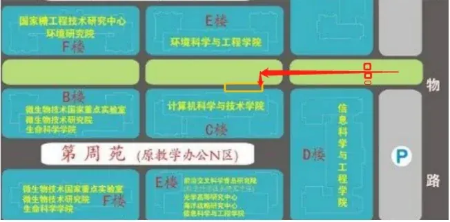
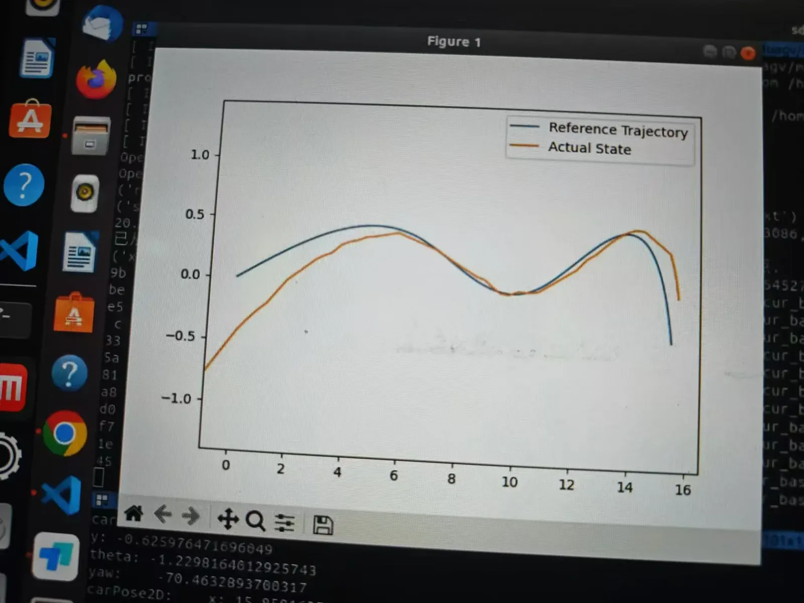

室外导航Outdoor navigation
RTK 校园道路自主循迹RTK-guided campus road navigation
自建 RTK 参考站，融合 GNSS 与 IMU 信息，并用 MPC 控制四轮平台沿校园道路循迹。Uses a local RTK base station, GNSS/IMU fusion, and MPC to guide a four-wheel platform along campus roads.
问题与目标Problem & goal
校园道路的 GNSS 信号受建筑、树木遮挡和多路径影响。项目搭建差分定位链路，使四轮 AGV 获得更连续的位置输入并完成路线循迹。Buildings, trees, and multipath can degrade campus-road GNSS. The project builds a differential positioning pipeline to provide a more continuous position estimate for route following.
定位与控制Localization & control
自建 RTK 参考站与流动站提供差分定位，九轴 IMU 补充姿态信息，经 EKF 平滑后输入 MPC 底盘控制器。PPT 同时指出仅靠 RTK 缺少实时障碍感知，这是系统边界。A local RTK base and rover provide differential positioning. A nine-axis IMU adds attitude information, smoothed through an EKF before feeding an MPC controller. The slides also note that RTK alone does not perceive dynamic obstacles.
道路演示Road demonstration
实机在校园道路上完成循迹演示，配套材料展示位姿和轨迹图。视频不代表对所有遮挡路段或动态障碍情形的完整验证。The robot demonstrates path following on campus roads, with pose and trajectory plots in the slides. The footage does not establish performance across all occluded routes or dynamic obstacle cases.

